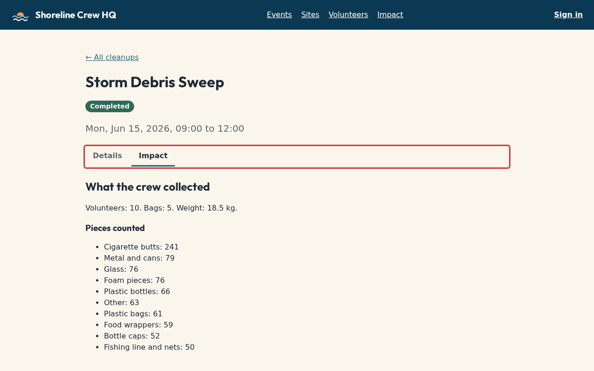

Your workbook for Session 14: a warm-up, the key ideas of Lessons 5.3 and 5.4, worked examples with real output, the guided labs, predict-then-check practice, a self-check for each lesson, and your exit ticket.
<Profiler>.Three questions, no notes. Write a sentence for each.
<Profiler id onRender> with ProfilerOnRenderCallback, which only reports in development.@rolldown/plugin-babel in Vite 8). It skips components that break the Rules of React: zero lint warnings matter.Before the compiler, npm run build on the HQ ends like this (times and hashes differ on your machine):
dist/assets/index-6OdvjMRn.js 252.23 kB │ gzip: 78.51 kB ✓ built in …ms
After Step 3's install and this vite.config.ts:
import react, { reactCompilerPreset } from '@vitejs/plugin-react' import babel from '@rolldown/plugin-babel' import { defineConfig } from 'vite' // https://vite.dev/config/ export default defineConfig({ plugins: [ react(), // The React Compiler: works out what each component can reuse between renders babel({ presets: [reactCompilerPreset()] }), ], })
the same build ends:
dist/assets/index-B_WIRHHo.js 270.77 kB │ gzip: 85.10 kB ✓ built in …ms
The price: 2 more modules and 18.5 kB more JavaScript (6.6 kB gzipped). What it buys, measured by the lesson (render counts are the same on the dev server and the build):
| Component renders | Lesson 5.2's code | memo(EventGroups) | Compiler, no memo |
|---|---|---|---|
| Typing pelican, before the answer | 560 | 14 | 14 |
| The whole search, answer included | 660 | 114 | 28 |
| Show details on one card | 5 | 5 | 1 |
| Signing out on /events as Maya (the sign-out's own commit) | 82 | 82 | 19 |
| Check in one volunteer on the desk | 23 | 23 | 23 |
And if you copy an older tutorial's setup instead, TypeScript stops you before the build:
vite.config.ts:8:7 - error TS2353: Object literal may only specify known properties, and 'babel' does not exist in type 'Options'.
8 babel: {
~~~~~
Found 1 error in vite.config.ts:8labs/module-14/l5_3-rendering-performance/TASKS.md. A terminal in starter: npm install once, then npm test: three tests fail, each with a count.npm test again.| Task | Count as shipped | What was new on every render? | My fix |
|---|---|---|---|
| 1 rows | |||
| 2 labels | |||
| 3 totals |
npm test ends with Tests 7 passed (7), npm run typecheck is silent and npm run lint says Found 0 warnings and 0 errors. Then the stretches: the starter with the compiler on (npm run test:compiler: predict first), and the debug handout.Write what you think each command prints (the error code, or how many warnings) and what it means, then compare with the lesson's Common Mistakes.
npx tsc -b reports, then check with the lesson. (An older tutorial's compiler setup, with plugin-react 6.)import react from '@vitejs/plugin-react' import { defineConfig } from 'vite' // From an older tutorial (plugin-react 4 and 5): the compiler as a Babel plugin inside react() export default defineConfig({ plugins: [ react({ babel: { plugins: ['babel-plugin-react-compiler'], }, }), ], })
npm run lint reports, then check with the lesson. (How many warnings, and what happens to the React Compiler's work on EventCard?)// How many times has this card rendered? const renders = useRef(0) renders.current += 1 console.log(`${event.title}: render ${renders.current}`)
Measure and Speed Up the Events Page (lesson page, "Project"). In class: Steps 1 to 3. At home: Steps 4 and 5.
<Profiler> and logRender in EventsPage; one console line per key pressmemo(EventGroups); the lines dropped to 0.0 ms, and I can say why it workedvite.config.ts runs reactCompilerPreset(), the build shows 82 modulesnpx tsc -b, npm run lint, npm run build pass; the organizer walk-through; my "what would I measure" note ⚠ react-hooks(exhaustive-deps): React Hook useCallback has a missing dependency: 'supplies'
╭─[src/Scratch.tsx:31:6]
29 │ const removeSupply = useCallback((supply: string) => {
30 │ setSupplies(supplies.filter((item) => item !== supply))
· ────┬───
· ╰── useCallback uses `supplies` here
31 │ }, [])
· ──
32 │
╰────
help: Either include it or remove the dependency array.
Found 1 warning and 0 errors.<Profiler onRender={logRender}> and open the app with npm run build and npm run preview. What does the console show while you type?vite.config.ts. Which change fixes what npx tsc -b prints?vite.config.ts:8:7 - error TS2353: Object literal may only specify known properties, and 'babel' does not exist in type 'Options'.
8 babel: {
~~~~~
Found 1 error in vite.config.ts:8@babel/core so the babel option existsas any so the config compilesreact() and add babel({ presets: [reactCompilerPreset()] }) from @rolldown/plugin-babelmemouseCallbackuseEffectconst top = useMemo(() => heaviest(logs, 3), [logs])npm run test:compiler), ends like this. Which test still fails, and what fixes it? ❯ src/lab.test.tsx (7 tests | 1 failed)
✓ Task 1: the shift roster (2)
✓ marking two volunteers in a row keeps both marks
✓ typing a note draws no row again
✓ Task 2: the sort order context (2)
✓ the button still switches the order
✓ typing a note draws no label again
❯ Task 3: the weight report (3)
✓ totals per beach, heaviest first
× typing a note adds nothing up again
✓ new logs are added up again
Tests 1 failed | 6 passed (7)The lesson's prompt: write the three reasons a component renders, each with one HQ example. Then, in one sentence each, say what memo, useCallback, useMemo and the React Compiler do. Finish with the number from today that surprised you most, and why.
TabsValue | undefined + a throwing useTabs).role="tablist" with a label, role="tab" + aria-selected, aria-controls / aria-labelledby, one tab stop (tabIndex 0 / -1), arrow keys, Home, End; panels hidden, not removed, so they keep their state.renderItem). Generic components (DataList<T>) infer T from their props and check the callbacks against it.getKey beats requiring an id.C extends ElementType = 'button', ComponentPropsWithRef<C>, Omit of the props the component owns: the props follow the as prop. Read long errors from the last line up.as. Move down only when the one above gets in the way.One Button, typed so that its props follow its as prop:
import type { ComponentPropsWithRef, ElementType } from 'react' import styles from './Button.module.css' export type ButtonVariant = 'primary' | 'secondary' | 'link' /** Button's own props, plus every prop of the element or component named in `as` */ type ButtonProps<C extends ElementType> = { /** What to render: 'button' (the default), 'a', or a component such as a router link */ as?: C variant?: ButtonVariant } & Omit<ComponentPropsWithRef<C>, 'as' | 'className'> // The HQ's one button look, on whatever element the job needs export function Button<C extends ElementType = 'button'>({ as, variant = 'secondary', ...props }: ButtonProps<C>) { const Component = as ?? 'button' // A <button> in a form submits unless told otherwise: make "button" the default type const type = Component === 'button' ? 'button' : undefined return <Component type={type} {...props} className={styles[variant]} /> }
Three wrong uses in a scratch file, and the first line of each error npx tsc -b prints:
<p> <Button href="/events/new">Plan a cleanup</Button> <Button as="a" href="/events/new" disabled> Plan a cleanup </Button> <Button variant="danger">Cancel cleanup</Button> </p>
src/Scratch.tsx:6:15 - error TS2322: Type '{ href: string; children: string; }' is not assignable to type 'IntrinsicAttributes & { as?: "button" | undefined; variant?: ButtonVariant | undefined; } & Omit<DetailedHTMLProps<ButtonHTMLAttributes<HTMLButtonElement>, HTMLButtonElement>, "as" | "className">'.
src/Scratch.tsx:7:41 - error TS2322: Type '{ as: "a"; href: string; disabled: true; children: string; }' is not assignable to type 'IntrinsicAttributes & { as?: "a" | undefined; variant?: ButtonVariant | undefined; } & Omit<DetailedHTMLProps<AnchorHTMLAttributes<HTMLAnchorElement>, HTMLAnchorElement>, "as" | "className">'.
src/Scratch.tsx:10:15 - error TS2322: Type '"danger"' is not assignable to type 'ButtonVariant | undefined'.
Found 3 errors in the same file, starting at: src/Scratch.tsx:6Each full error ends with the line that matters: a button has no href (the Did you mean 'ref' is only a spelling guess), a link has no disabled, "danger" is not a ButtonVariant. Read long errors from the last line up.
labs/module-14/l5_4-component-patterns/TASKS.md. A terminal in starter: npm install, npm test, npm run typecheck.Tests 9 passed (9) and the type check is silent.| Question | Your answer |
|---|---|
| Which pattern is each component, and which HQ component is its model? | |
Hover item and report in the test file: what did TypeScript infer? | |
Why does chipTypes.tsx fail the type check while Chip accepts anything? |
Predict the error code or the warnings and what each means, then compare with the lesson (Render Props, and Common Questions).
npx tsc -b reports, then check with the lesson. (A list that requires an id on every item, given debris counts.)import type { ReactNode } from 'react' import type { DebrisCount } from './api/types.ts' interface IdListProps<T extends { id: string }> { items: T[] renderItem: (item: T) => ReactNode } // Only for items that have an id: the constraint lets the list use item.id as the key function IdList<T extends { id: string }>({ items, renderItem }: IdListProps<T>) { return ( <ul> {items.map((item) => ( <li key={item.id}>{renderItem(item)}</li> ))} </ul> ) } export function PiecesCounted({ items }: { items: DebrisCount[] }) { return <IdList items={items} renderItem={(item) => `${item.category}: ${item.count}`} /> }
npm run lint reports, then check with the lesson. (The dot form libraries use: Tabs.List, Tabs.Tab, Tabs.Panel.)export const Tabs = Object.assign(TabsRoot, { List: TabList, Tab, Panel: TabPanel })
Tabs, Lists and One Button for the HQ (lesson page, "Project"). In class: Steps 1, 3 and 4. At home: Steps 2, 5, 6 and 7.
Button.tsx and Button.module.css (+ the Plan a cleanup link as <Button as="a">)buttonStyles button is a <Button>; only Button.tsx imports Button.module.cssDataList.tsx, EventList and SitesPage use it; EventList.module.css deletedTabs.tsx and Tabs.module.cssgetImpact in client.ts and ImpactSummary.tsx
Tabs.tsx NOT export TabsContext?npx tsc -b reports this for <Button href="/events/new">Plan a cleanup</Button> (first two lines). What is the right fix?src/Scratch.tsx:6:15 - error TS2322: Type '{ href: string; children: string; }' is not assignable to type 'IntrinsicAttributes & { as?: "button" | undefined; variant?: ButtonVariant | undefined; } & Omit<DetailedHTMLProps<ButtonHTMLAttributes<HTMLButtonElement>, HTMLButtonElement>, "as" | "className">'.
Property 'href' does not exist on type 'IntrinsicAttributes & { as?: "button" | undefined; variant?: ButtonVariant | undefined; } & Omit<DetailedHTMLProps<ButtonHTMLAttributes<HTMLButtonElement>, HTMLButtonElement>, "as" | "className">'. Did you mean 'ref'?as="a": a link needs the props of an a elementhref to ref, as TypeScript suggestshref to ButtonPropsvariant="link"src/Scratch.tsx:21:18 - error TS2322: Type 'DebrisCount[]' is not assignable to type '{ id: string; }[]'.
src/Scratch.tsx:21:62 - error TS2339: Property 'category' does not exist on type '{ id: string; }'.
src/Scratch.tsx:21:80 - error TS2339: Property 'count' does not exist on type '{ id: string; }'.
Found 3 errors in the same file, starting at: src/Scratch.tsx:21moveBetweenTabs, why must the code check move === undefined and next === undefined before next.focus()?moves[event.key] and tabs[...] as possibly undefinedTabs.List, Tabs.Tab, Tabs.Panel) with Object.assign. It type-checks; what does npm run lint say (first warning shown), and what does it cost? ⚠ react(only-export-components): Fast refresh only works when a file only exports components. Move your component(s) to a separate file.
╭─[src/components/Tabs.tsx:37:10]
36 │ // The parent: owns which tab is selected and shares it with the parts inside
37 │ function TabsRoot({ defaultTab, children }: TabsProps) {
· ────────
38 │ const [selected, setSelected] = useState(defaultTab)The lesson's prompt: for each of today's three patterns, write one sentence on the problem it solves and one HQ component that uses it. Then write down the longest TypeScript error you met today and, in your own words, what its last line was telling you.
Three questions, no notes.
<a href="/..."> link in the HQ (Lesson 6.1 changes them)npm install react-router, this workbook| Term | Meaning |
|---|---|
| render / commit | React calling a component to see what it returns / React changing the DOM where the result differs |
| memoization | Remembering a result and reusing it until its inputs change |
memo | Wraps a component: React skips it when every prop is the same (Object.is) as last time |
useCallback / useMemo | Keep the same function / the same calculated value between renders until a dependency changes |
| Object.is, referential equality | Same string, number or boolean value; for objects, arrays and functions: the same object, not a look-alike |
| stale value | A function that keeps a value from an older render because a dependency was left out |
| React DevTools Profiler | The browser extension's tab that records commits, a flame graph and why each component rendered |
<Profiler>, ProfilerOnRenderCallback | React's component for measuring from code, and its callback's type (development builds only) |
| React Compiler | A build step that memoizes components and Hooks for you; it skips code that breaks the Rules of React |
'use no memo' | A directive that turns the compiler off for one function |
| compound component | Parts that only work together (Tabs, TabList, Tab, TabPanel) sharing state through a private context |
| render prop | A prop whose value is a function that returns something to render (renderItem) |
| generic component | A component with a type parameter that TypeScript infers from its props (DataList<T>) |
polymorphic component, as | A component that renders the element or component named in its as prop, with that element's props |
ElementType, ComponentPropsWithRef<C> | Anything you can render as a tag / the props (ref included) of that tag or component |
| roving tabindex | Only the selected tab has tabIndex 0, so Tab enters the tab list once; arrow keys move inside it |